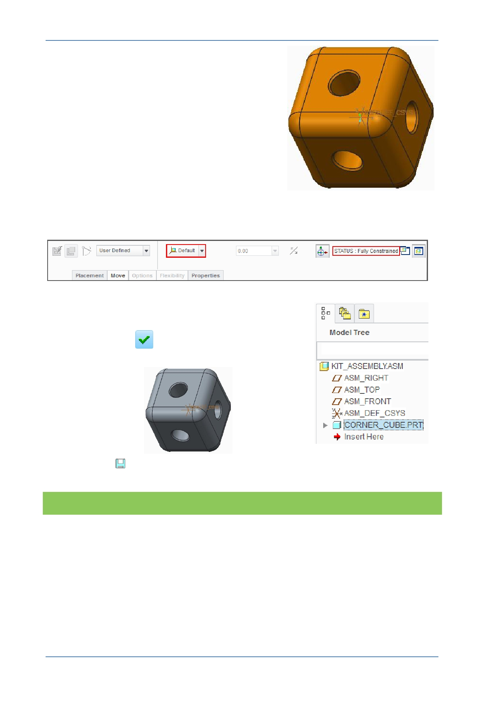

PTC Academic Program
The corner cube will move until its XYZ coordinate
system coincides with the assemblies default
coordinate system.
Components change to a yellow-orange color as
soon as they become fully constrained (cannot
move) in the assembly.
The Assembly dashboard shows the Default constraint type message confirms the part
is Fully Constrained .
4. Complete the placement of the part:
In the Assembly dashboard, click Complete
Component
to complete the component
placement.
5. Click Save
to save then OK to close the Save
dialog.
What have you learned?
Adding a component to an assembly – temporary placement.
Assembly dashboard – status, fully constrained.
Assembly constraints – Automatic, default, fully constrained.
Datum display – visibility.
© 2012 PTC
Creo Parametric 2.0 Primer
Page 68